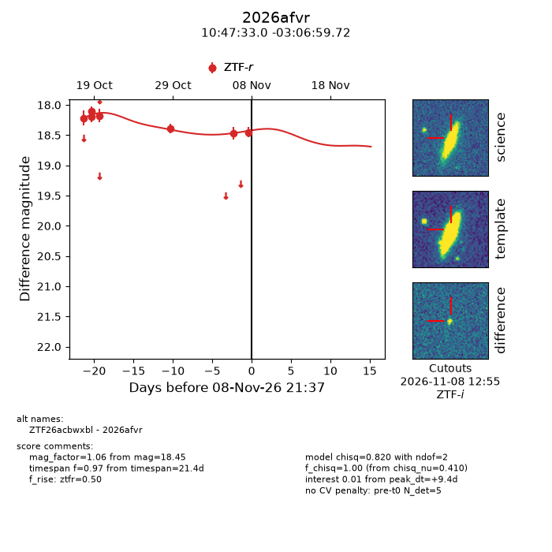
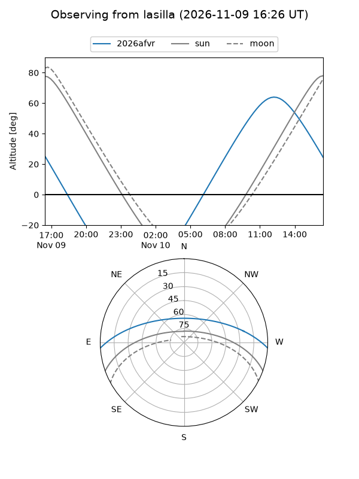
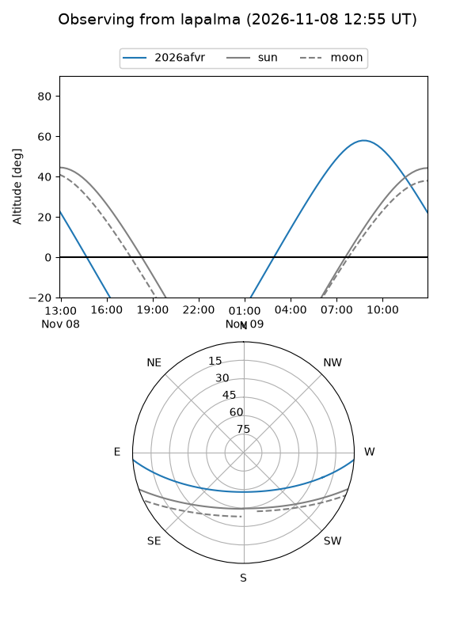
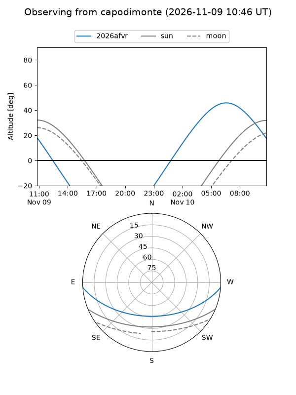
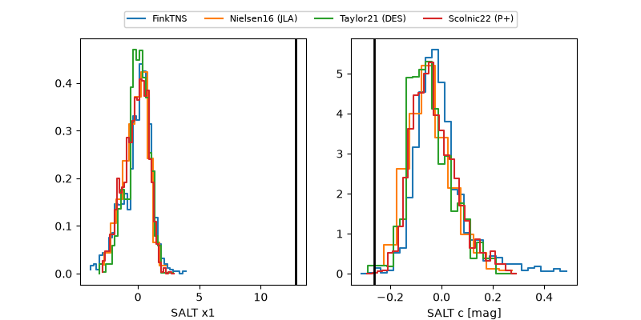

2026afvr
Target 2026afvr at 2026-11-08 21:39
Aliases and brokers:
FINK-ZTF: ztf.fink-portal.org/ZTF26acbwxbl
Lasair-ZTF: lasair-ztf.lsst.ac.uk/objects/ZTF26acbwxbl
ALeRCE-ZTF: alerce.online/object/ZTF26acbwxbl
YSE-PZ: ziggy.ucolick.org/yse/transient_detail/2026afvr
TNS name: wis-tns.org/object/2026afvr
Direct TNS query: direct search
alt names
ZTF26acbwxbl (ztf,fink_ztf)
2026afvr (tns,yse)
Coordinates:
equatorial (ra, dec) = 161.8873,-3.11659
equatorial (HMS+DMS) = 10:47:32.96,-03:06:59.72
galactic (l, b) = (253.4254,+47.49106)
Flags:
peak dt: +9.4
Photometry:
last ztfr=18.45
7 ztfr detections
Lightcurve

Visibility



Additional plots
